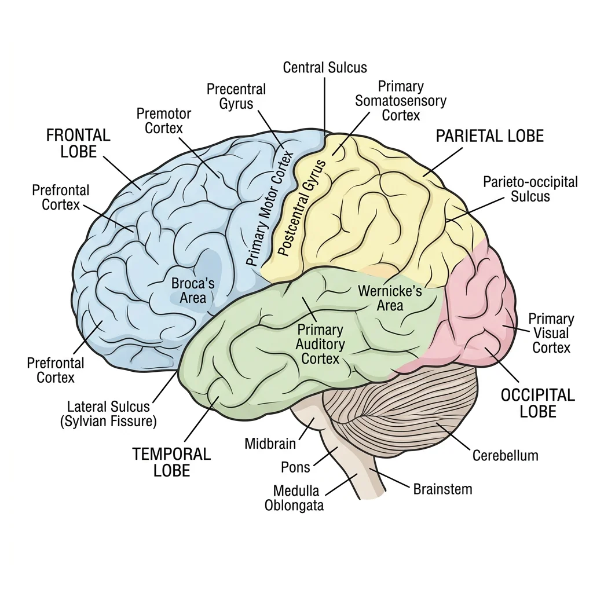
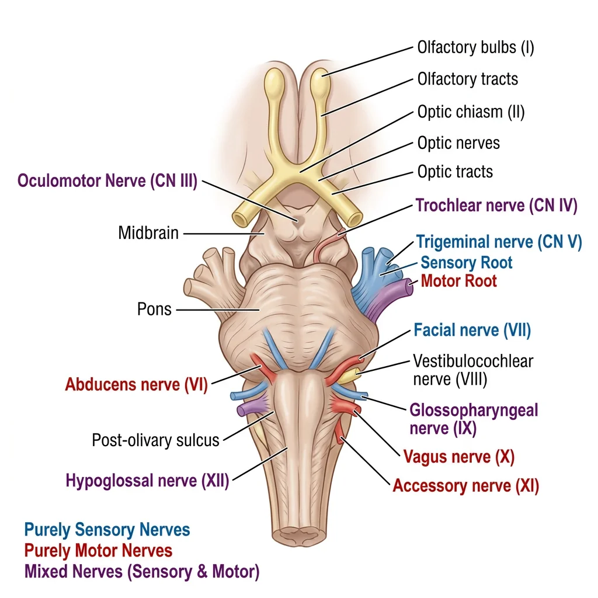
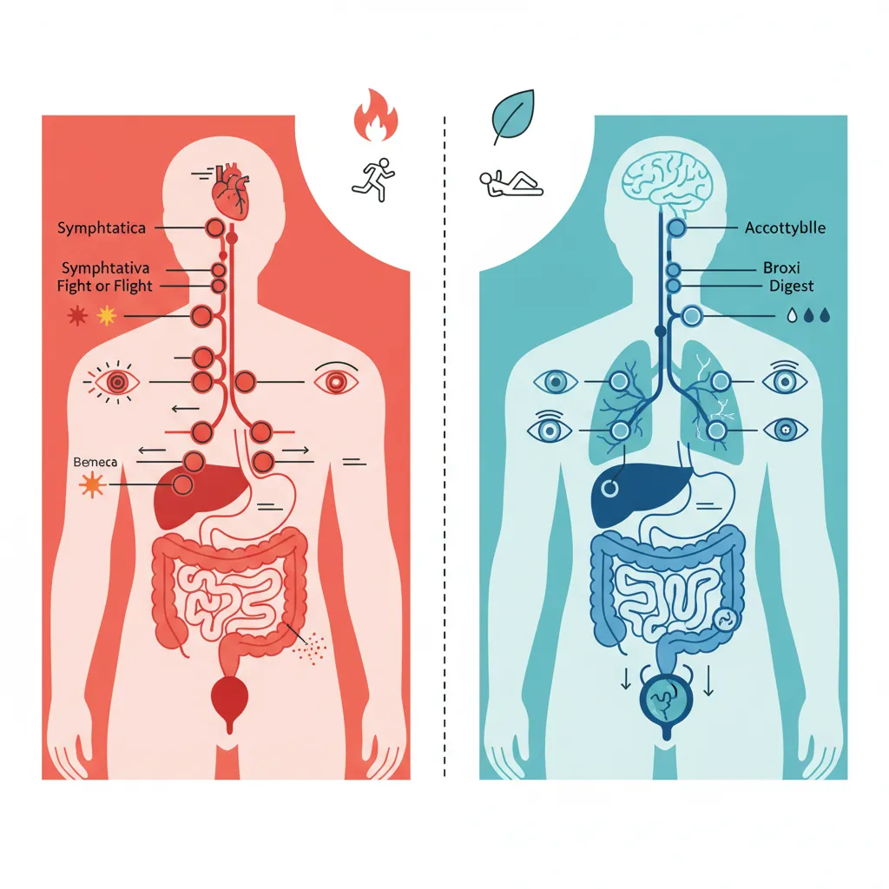
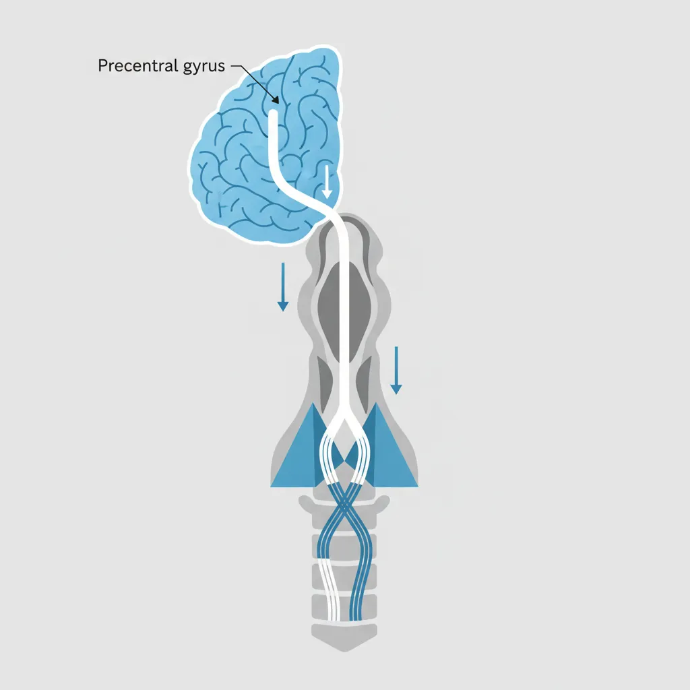
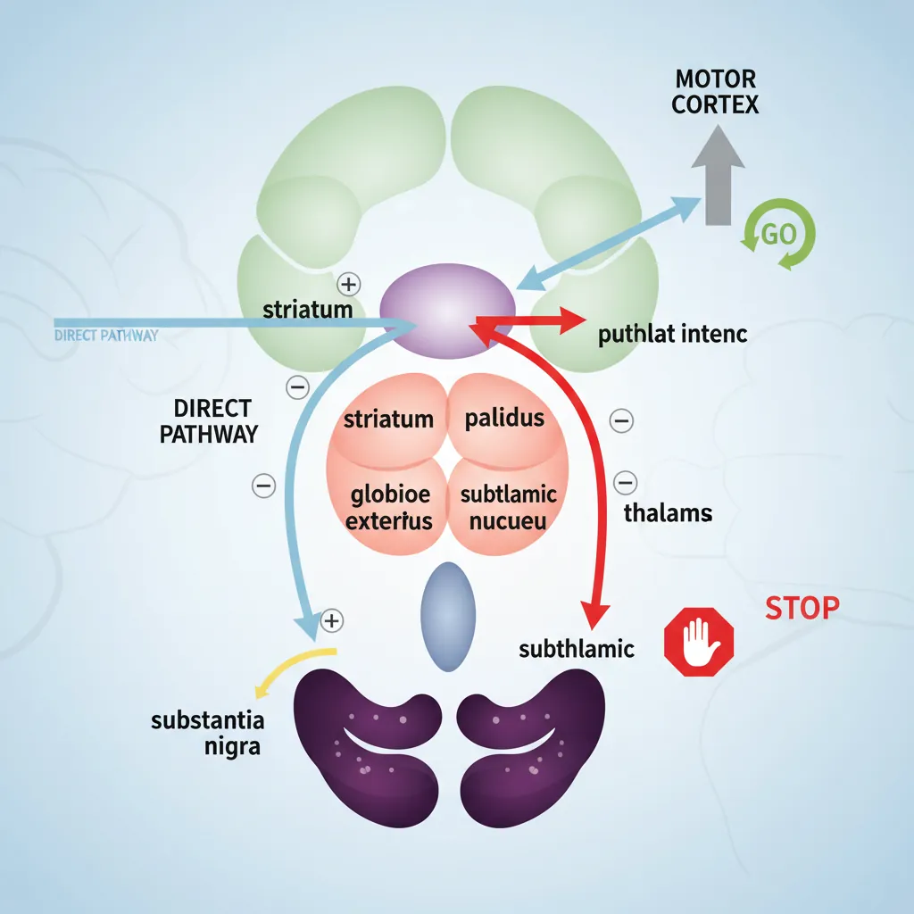
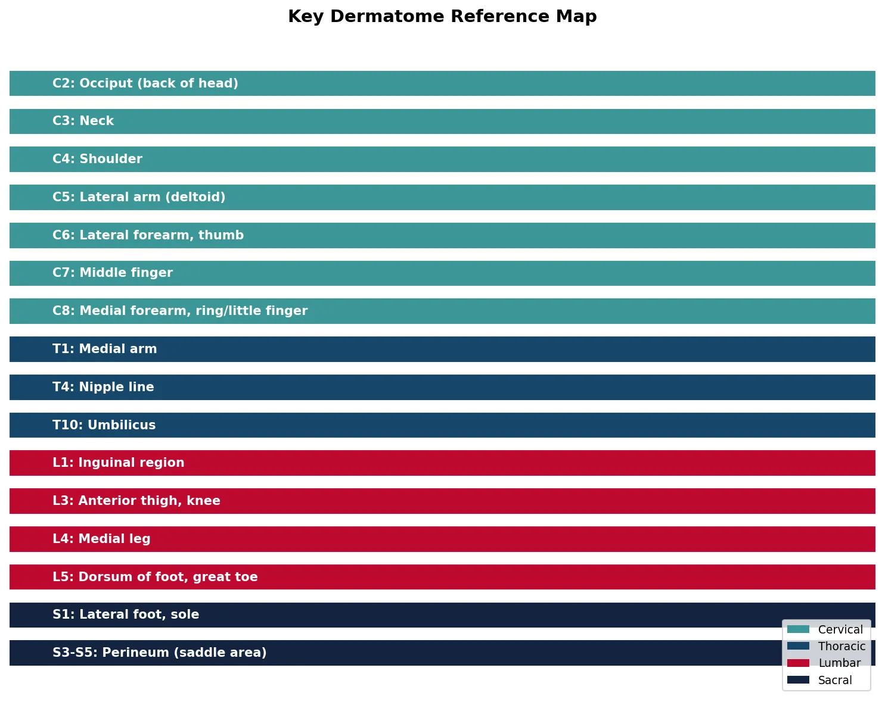

Human Anatomy Mastery
Anatomical Terminology & Body Planes
Directional terms, planes, cavities, tissuesSkeletal System & Joints
Osteology, axial & appendicular, arthrologyMuscular System & Movement
Muscle types, functional groups, biomechanicsCardiovascular & Lymphatic Anatomy
Heart, vessels, lymphatics, clinical linksNervous System & Neuroanatomy
CNS, PNS, autonomic, functional pathwaysVisceral Anatomy — Thorax & Abdomen
Thoracic & abdominal organs, peritoneumHead, Neck & Special Senses
Skull foramina, eye, ear, oral anatomySurface Anatomy & Clinical Imaging
Landmarks, X-ray, CT, MRI, proceduresHistology & Microscopic Anatomy
Cell ultrastructure, tissue & organ histologyEmbryology & Developmental Anatomy
Germ layers, organogenesis, malformationsFunctional & Applied Anatomy
Biomechanics, posture, gait, integrationRegional Dissection Mastery
Upper/lower limb, thorax, abdomen, pelvisCentral Nervous System
The central nervous system (CNS) — comprising the brain and spinal cord — is the command centre of the entire body. It receives sensory input, integrates and processes information, and generates motor commands. The brain alone contains roughly 86 billion neurons, each forming up to 10,000 synaptic connections, creating a network of staggering complexity. Understanding CNS anatomy is fundamental to neurology, neurosurgery, psychiatry, and rehabilitation medicine.

Cerebrum Lobes
The cerebrum is the largest part of the brain, divided into two hemispheres connected by the corpus callosum. Each hemisphere has four lobes, named after the overlying skull bones:
| Lobe | Key Regions | Functions | Lesion Effects |
|---|---|---|---|
| Frontal | Primary motor cortex (precentral gyrus), Broca's area, prefrontal cortex | Voluntary movement, speech production, executive function, personality, judgement | Contralateral paralysis, expressive aphasia, personality changes |
| Parietal | Primary somatosensory cortex (postcentral gyrus), superior/inferior parietal lobules | Somatic sensation (touch, pressure, pain), spatial awareness, integration | Contralateral sensory loss, neglect syndrome, agnosia |
| Temporal | Primary auditory cortex, Wernicke's area, hippocampus (medial) | Hearing, language comprehension, memory formation, emotional processing | Receptive aphasia, memory deficits, auditory agnosia |
| Occipital | Primary visual cortex (calcarine sulcus), visual association areas | Visual processing, colour and motion perception | Contralateral visual field loss (homonymous hemianopia), cortical blindness |
Phineas Gage — The Man Who Lost His Personality (1848)
Railroad worker Phineas Gage survived an iron rod blasting through his left frontal lobe. Physically he recovered remarkably, but his personality transformed dramatically — from reliable and well-mannered to impulsive, profane, and unable to follow through on plans. His case was among the first to demonstrate that specific brain regions govern personality and executive function, launching the field of behavioural neurology. The frontal lobe damage disrupted his ability to plan, make decisions, and regulate social behaviour.
Cerebellum
The cerebellum ("little brain") sits posterior to the brainstem, connected by three pairs of cerebellar peduncles. Despite being only 10% of brain volume, it contains over 50% of all neurons. The cerebellum has three functional divisions:
- Vestibulocerebellum (flocculonodular lobe) — balance and eye movements; receives input from vestibular nuclei
- Spinocerebellum (vermis + paravermis) — posture, limb coordination, and gait; receives proprioceptive input from the spinal cord
- Cerebrocerebellum (lateral hemispheres) — planning and timing of complex movements, motor learning; receives input from the cerebral cortex
Brainstem
The brainstem connects the cerebrum to the spinal cord and houses critical nuclei for vital functions. It consists of three parts (superior to inferior):
| Structure | Key Contents | Cranial Nerves | Functions |
|---|---|---|---|
| Midbrain | Superior/inferior colliculi, substantia nigra, cerebral peduncles, red nucleus | CN III (Oculomotor), CN IV (Trochlear) | Visual/auditory reflexes, motor relay, dopamine production |
| Pons | Pontine nuclei, middle cerebellar peduncle, pneumotaxic/apneustic centres | CN V (Trigeminal), CN VI (Abducens), CN VII (Facial), CN VIII (Vestibulocochlear) | Relay to cerebellum, respiratory modulation, sensory relay |
| Medulla Oblongata | Pyramids (corticospinal decussation), olive, dorsal column nuclei | CN IX (Glossopharyngeal), CN X (Vagus), CN XI (Accessory), CN XII (Hypoglossal) | Cardiorespiratory centres, vomiting reflex, swallowing, motor decussation |
Running through the core of the brainstem is the reticular formation — a diffuse network of neurons responsible for arousal, consciousness, sleep-wake cycles, and pain modulation. The ascending reticular activating system (ARAS) projects to the thalamus and cortex to maintain wakefulness. Damage to the ARAS (as in severe brainstem stroke) can cause coma.
Spinal Cord Tracts
The spinal cord extends from the medulla oblongata to approximately the L1-L2 vertebral level (the conus medullaris), below which the cauda equina (nerve roots) continues. In cross-section, the cord shows a butterfly-shaped grey matter (cell bodies) surrounded by white matter (myelinated tracts).
The major ascending (sensory) and descending (motor) tracts are organised in specific columns:
- Dorsal columns (gracile + cuneate fasciculi) — carry fine touch, proprioception, and vibration; ascend ipsilaterally, cross in the medulla
- Lateral spinothalamic tract — carries pain and temperature; crosses within 1-2 segments of entry, ascends contralaterally
- Lateral corticospinal tract — primary voluntary motor pathway; crosses at the pyramidal decussation in the medulla, descends contralaterally
- Anterior corticospinal tract — minor motor pathway; descends ipsilaterally, crosses near the target level
Peripheral Nervous System
The peripheral nervous system (PNS) includes all neural structures outside the brain and spinal cord — 12 pairs of cranial nerves, 31 pairs of spinal nerves, and their branches. The PNS serves as the communication highway between the CNS and the rest of the body.

Cranial Nerves
The twelve cranial nerves emerge from the brain (mainly the brainstem) and innervate structures primarily in the head and neck (except CN X, the vagus, which extends to the thorax and abdomen). The classic mnemonic is: "Oh, Oh, Oh, To Touch And Feel Very Good Velvet, AH!"
| # | Name | Type | Key Function | Clinical Test |
|---|---|---|---|---|
| I | Olfactory | Sensory | Smell | Identify odours |
| II | Optic | Sensory | Vision | Visual acuity, visual fields |
| III | Oculomotor | Motor | Most eye movements, pupil constriction, eyelid elevation | Follow the H pattern, pupil light reflex |
| IV | Trochlear | Motor | Superior oblique (down and in gaze) | Look down while adducted |
| V | Trigeminal | Both | Facial sensation (3 divisions), mastication muscles | Light touch on face, jaw clench |
| VI | Abducens | Motor | Lateral rectus (abduction of eye) | Look laterally |
| VII | Facial | Both | Facial expression, taste (anterior 2/3 tongue), lacrimation | Raise eyebrows, smile, close eyes tight |
| VIII | Vestibulocochlear | Sensory | Hearing, balance | Whisper test, Rinne/Weber tuning fork |
| IX | Glossopharyngeal | Both | Taste (posterior 1/3 tongue), pharyngeal sensation, parotid gland | Gag reflex (afferent limb) |
| X | Vagus | Both | Pharynx, larynx, heart, lungs, GI tract (parasympathetic) | Say "Ahhh" (palate elevation), gag reflex (efferent) |
| XI | Accessory | Motor | Sternocleidomastoid, trapezius | Shrug shoulders, turn head against resistance |
| XII | Hypoglossal | Motor | Tongue movements | Stick tongue out (deviates to side of lesion) |
Spinal Nerves & Plexuses
The 31 pairs of spinal nerves (8 cervical, 12 thoracic, 5 lumbar, 5 sacral, 1 coccygeal) exit through intervertebral foramina. Each spinal nerve carries both motor and sensory fibres and supplies a specific dermatome (skin area) and myotome (muscle group).
In the cervical, lumbar, and sacral regions, ventral rami intermingle to form nerve plexuses:
| Plexus | Roots | Major Nerves | Key Muscles Supplied |
|---|---|---|---|
| Cervical | C1-C4 | Phrenic nerve (C3-C5) | Diaphragm (primary respiratory muscle) |
| Brachial | C5-T1 | Musculocutaneous, Median, Ulnar, Radial, Axillary | All upper limb muscles |
| Lumbar | L1-L4 | Femoral, Obturator | Hip flexors, knee extensors, thigh adductors |
| Sacral | L4-S3 | Sciatic (→ tibial + common peroneal), Superior/Inferior gluteal | Gluteals, hamstrings, all leg and foot muscles |
Erb-Duchenne Palsy — Upper Brachial Plexus Injury
A newborn presents with the right arm hanging limply at the side, internally rotated and extended — the classic "waiter's tip" position. During a difficult delivery, excessive lateral traction on the head stretched the upper brachial plexus (C5-C6 roots). The affected muscles include the deltoid (axillary nerve), biceps and brachialis (musculocutaneous nerve), and supraspinatus/infraspinatus (suprascapular nerve). The baby cannot abduct, externally rotate, or flex the arm. Most cases recover with physiotherapy, but severe avulsions may require surgical nerve grafting.
Autonomic System
The autonomic nervous system (ANS) regulates involuntary functions — heart rate, digestion, respiratory rate, pupil dilation, glandular secretion, and more. It operates largely below conscious awareness, maintaining homeostasis through two opposing divisions.

Sympathetic vs Parasympathetic
| Feature | Sympathetic ("Fight or Flight") | Parasympathetic ("Rest and Digest") |
|---|---|---|
| Origin | Thoracolumbar (T1-L2) | Craniosacral (CN III, VII, IX, X + S2-S4) |
| Ganglia Location | Paravertebral chain + prevertebral ganglia (close to spinal cord) | Terminal ganglia (close to or within target organ) |
| Fibre Length | Short preganglionic, long postganglionic | Long preganglionic, short postganglionic |
| Neurotransmitter | Preganglionic: ACh; Postganglionic: Noradrenaline | Both: Acetylcholine (ACh) |
| Heart | ↑ Rate, ↑ contractility | ↓ Rate |
| Pupils | Dilate (mydriasis) | Constrict (miosis) |
| Bronchi | Dilate | Constrict + increase secretions |
| GI Tract | ↓ Motility, sphincters contract | ↑ Motility, sphincters relax |
Horner's Syndrome — Sympathetic Chain Disruption
A 54-year-old man with a Pancoast tumour (lung cancer at the apex) presents with the classic triad of Horner's syndrome: (1) miosis (constricted pupil — loss of sympathetic pupil dilation), (2) ptosis (drooping eyelid — loss of sympathetic Müller's muscle stimulation), and (3) anhidrosis (absent sweating on the affected side of the face). The tumour has invaded the sympathetic chain as it ascends through the thoracic outlet. Understanding the anatomical course of the sympathetic trunk explains why a lung tumour can cause eye symptoms.
Enteric Nervous System
The enteric nervous system (ENS) is sometimes called the "second brain" — it contains approximately 500 million neurons embedded in the wall of the gastrointestinal tract, from oesophagus to rectum. It can function independently of the CNS (though it is modulated by sympathetic and parasympathetic input). Two major plexuses comprise the ENS:
- Myenteric (Auerbach's) plexus — between the longitudinal and circular muscle layers; primarily controls gut motility (peristalsis)
- Submucosal (Meissner's) plexus — in the submucosa; primarily controls glandular secretion and blood flow to the mucosa
Functional Systems
Motor and sensory pathways are the highways of the nervous system — carrying commands from brain to muscles and sensory information from the periphery to the cortex. Understanding these pathways is essential for localising neurological lesions.

Motor Pathways
The primary voluntary motor pathway is the corticospinal (pyramidal) tract:
- Upper motor neuron — cell body in the primary motor cortex (precentral gyrus) → descends through the internal capsule → cerebral peduncle → pons → medullary pyramid
- Decussation — 85-90% of fibres cross at the pyramidal decussation in the lower medulla → form the lateral corticospinal tract
- Lower motor neuron — synapses in the anterior horn of the spinal cord → exits via ventral root → peripheral nerve → neuromuscular junction → muscle
graph TD
subgraph Motor["Motor Pathway (Descending)"]
MC["Motor Cortex
(precentral gyrus)"]
IC["Internal Capsule"]
PYR["Pyramidal
Decussation
(medulla)"]
SC_M["Spinal Cord
Anterior Horn"]
MUSC["Skeletal Muscle"]
MC --> IC --> PYR -->|"Crosses midline"| SC_M --> MUSC
end
subgraph Sensory["Sensory Pathway (Ascending)"]
REC["Sensory Receptor
(skin, joints)"]
DRG["Dorsal Root
Ganglion"]
SC_S["Spinal Cord
Dorsal Column"]
THAL["Thalamus
(VPL nucleus)"]
SOM["Somatosensory
Cortex
(postcentral gyrus)"]
REC --> DRG --> SC_S -->|"Crosses midline"| THAL --> SOM
end
style Motor fill:#e8f4f4,stroke:#3B9797
style Sensory fill:#f0f4f8,stroke:#16476A
Sensory Pathways
The two major ascending sensory pathways carry different modalities and cross at different levels:
| Feature | Dorsal Column–Medial Lemniscus (DCML) | Anterolateral (Spinothalamic) |
|---|---|---|
| Modalities | Fine touch, vibration, proprioception | Pain, temperature, crude touch |
| 1st-order neuron | Dorsal root ganglion → ascend ipsilaterally in dorsal columns | Dorsal root ganglion → synapse in dorsal horn |
| Decussation | In the medulla (internal arcuate fibres) | In the spinal cord (within 1-2 segments of entry) |
| 2nd-order neuron → Thalamus | Medial lemniscus → VPL nucleus of thalamus | Spinothalamic tract → VPL nucleus of thalamus |
| 3rd-order neuron | Thalamus → somatosensory cortex | Thalamus → somatosensory cortex |
Reflex Arcs
A reflex arc is the simplest functional unit of the nervous system — a rapid, involuntary response to a stimulus that bypasses conscious processing. The basic components are:
- Receptor — sensory receptor detects stimulus (e.g., muscle spindle detects stretch)
- Afferent neuron — sensory nerve carries signal to spinal cord
- Integration centre — in the spinal cord (may include interneurons)
- Efferent neuron — motor nerve carries command to effector
- Effector — muscle contracts (or gland secretes)
Clinically important reflexes include the knee-jerk (patellar) reflex (L3-L4, tests femoral nerve), ankle jerk (Achilles) reflex (S1-S2, tests tibial nerve), biceps reflex (C5-C6, tests musculocutaneous nerve), and triceps reflex (C7-C8, tests radial nerve). Hyperactive reflexes suggest UMN lesion; absent reflexes suggest LMN lesion.
Advanced Neuroanatomy
Beyond the cortex and pathways, several deep brain structures play crucial roles in movement regulation, emotion, memory, and fluid homeostasis.

Basal Ganglia
The basal ganglia are a group of subcortical nuclei that modulate movement — they do not initiate movement but fine-tune and facilitate desired movements while suppressing unwanted ones. Key structures include:
- Caudate nucleus + Putamen = Striatum (input centre — receives cortical input)
- Globus pallidus (internal + external) — output centre
- Subthalamic nucleus — excitatory component of the indirect pathway
- Substantia nigra — pars compacta: dopamine-producing neurons; pars reticulata: output pathway
The basal ganglia work through two parallel circuits: the direct pathway (facilitates movement — "go" signal) and the indirect pathway (inhibits movement — "stop" signal). Dopamine from the substantia nigra tips the balance in favour of the direct pathway, promoting movement. Loss of dopaminergic neurons → Parkinson's disease (difficulty initiating movement).
Limbic System
The limbic system is a ring of structures surrounding the corpus callosum that governs emotion, memory, motivation, and autonomic regulation. Key components:
| Structure | Location | Primary Function | Lesion Effect |
|---|---|---|---|
| Hippocampus | Medial temporal lobe | Memory formation (short-term → long-term) | Anterograde amnesia (cannot form new memories) |
| Amygdala | Anterior temporal lobe | Fear processing, emotional memory | Klüver-Bucy syndrome (fearlessness, hyperorality) |
| Cingulate Gyrus | Above corpus callosum | Emotional processing, pain perception, decision-making | Akinetic mutism, emotional blunting |
| Hypothalamus | Below thalamus | Autonomic control, thermoregulation, hunger, thirst, hormones | Temperature dysregulation, hormonal imbalances |
| Mammillary Bodies | Posterior hypothalamus | Memory circuits (Papez circuit) | Wernicke-Korsakoff syndrome (thiamine deficiency) |
Patient H.M. — The Man With No Memory (1953)
Henry Molaison (known as Patient H.M. until his death in 2008) underwent bilateral medial temporal lobe resection — including both hippocampi — to treat intractable epilepsy. While the surgery controlled his seizures, it left him with profound anterograde amnesia: he could not form new declarative memories. He could remember events before the surgery and could learn new motor skills (procedural memory), but every person he met and every event after the surgery was immediately forgotten. His case revolutionised our understanding that the hippocampus is essential for converting short-term memories into long-term declarative memories, while procedural memory uses different neural circuits.
Ventricles & CSF Flow
The brain contains four interconnected ventricles that produce and circulate cerebrospinal fluid (CSF) — a clear, cushioning fluid that bathes the brain and spinal cord, providing buoyancy, protection, and metabolic waste removal.
CSF flow path: Lateral ventricles (in cerebral hemispheres) → interventricular foramen (of Monro) → Third ventricle (midline, surrounded by thalamus) → cerebral aqueduct (of Sylvius) → Fourth ventricle (between cerebellum and brainstem) → exits via median aperture (of Magendie) and lateral apertures (of Luschka) → subarachnoid space → reabsorbed into venous sinuses via arachnoid granulations.
Clinical Links
The nervous system is vulnerable to a wide range of pathologies — vascular, traumatic, degenerative, and autoimmune. Understanding neuroanatomy allows precise clinical localisation of lesions based on the pattern of deficits.
Stroke Localization
Because different brain regions have specific functions and specific blood supplies, the pattern of neurological deficits after a stroke allows clinicians to identify which vessel is occluded:
- MCA stroke → contralateral face/arm weakness > leg, aphasia (dominant hemisphere), neglect (non-dominant)
- ACA stroke → contralateral leg weakness > arm, personality changes, urinary incontinence
- PCA stroke → contralateral visual field loss, memory problems (hippocampal involvement)
- Basilar artery stroke → cranial nerve palsies, cerebellar signs, potentially "locked-in syndrome"
- Lateral medullary syndrome (Wallenberg) → ipsilateral facial numbness, Horner's, ataxia + contralateral body pain/temperature loss (PICA territory)
Nerve Injuries
Peripheral nerve injuries produce characteristic patterns based on which nerve is damaged:
| Nerve Injured | Common Mechanism | Clinical Presentation |
|---|---|---|
| Radial nerve | Midshaft humeral fracture ("Saturday night palsy") | Wrist drop — cannot extend wrist or fingers |
| Median nerve | Carpal tunnel compression, supracondylar fracture | Hand of benediction (attempting fist), ape hand, thenar wasting |
| Ulnar nerve | Medial epicondyle fracture, cubital tunnel | Claw hand (4th-5th finger clawing), hypothenar wasting |
| Common peroneal | Fibular neck fracture, leg crossing, tight cast | Foot drop — cannot dorsiflex foot, high-stepping gait |
| Long thoracic nerve | Axillary node dissection, trauma | Winged scapula — serratus anterior paralysis |
Parkinson's, MS & Neuropathies
Parkinson's Disease — Basal Ganglia Dopamine Depletion
Parkinson's disease results from progressive loss of dopaminergic neurons in the substantia nigra pars compacta. With reduced dopamine input to the striatum, the balance shifts toward the indirect (inhibitory) pathway, producing the classic tetrad: resting tremor ("pill-rolling"), bradykinesia (slowness of movement), rigidity (lead-pipe or cogwheel), and postural instability. Treatment with levodopa (dopamine precursor) replaces the depleted neurotransmitter but loses efficacy over time as more neurons degenerate.
Multiple Sclerosis — Demyelination in Space and Time
Multiple sclerosis (MS) is an autoimmune disease targeting myelin sheaths in the CNS. Demyelinated plaques can appear anywhere in the brain and spinal cord, causing diverse neurological symptoms that "disseminate in space and time" — different deficits appearing at different times. Common presentations include optic neuritis (visual loss), internuclear ophthalmoplegia (eye movement abnormality), spasticity, sensory disturbances, and bladder dysfunction. MRI shows characteristic periventricular white matter lesions ("Dawson's fingers"). The relapsing-remitting pattern is most common, and disease-modifying therapies can slow progression.
Practice & Tools
Practice Exercises
Cranial Nerve Examination
For each of the 12 cranial nerves, describe how you would test its function during a neurological examination. Then, predict what deficits would result from a lesion affecting each nerve.
Lesion Localisation Challenge
A patient presents with: left-sided face and arm weakness (sparing the forehead), left homonymous hemianopia, and inability to speak (but can understand language). Localise the lesion: which brain region and which blood vessel territory is affected? Explain your reasoning step by step.
UMN vs LMN Differentiation
Create a comparison table distinguishing upper motor neuron from lower motor neuron lesions across at least 6 clinical features. Then provide one disease example for each type.
Applied Code Example
This Python script visualises the dermatome map — the relationship between spinal nerve levels and the skin regions they innervate — a fundamental concept for neurological examination.
import numpy as np
import matplotlib.pyplot as plt
# Key dermatomes and their spinal nerve levels
dermatomes = {
'C2': 'Occiput (back of head)',
'C3': 'Neck',
'C4': 'Shoulder',
'C5': 'Lateral arm (deltoid)',
'C6': 'Lateral forearm, thumb',
'C7': 'Middle finger',
'C8': 'Medial forearm, ring/little finger',
'T1': 'Medial arm',
'T4': 'Nipple line',
'T10': 'Umbilicus',
'L1': 'Inguinal region',
'L3': 'Anterior thigh, knee',
'L4': 'Medial leg',
'L5': 'Dorsum of foot, great toe',
'S1': 'Lateral foot, sole',
'S3-S5': 'Perineum (saddle area)'
}
# Create visualisation
fig, ax = plt.subplots(figsize=(10, 8))
y_positions = np.arange(len(dermatomes))
levels = list(dermatomes.keys())
regions = list(dermatomes.values())
# Colour code by region (cervical, thoracic, lumbar, sacral)
colors = []
for level in levels:
if level.startswith('C'):
colors.append('#3B9797') # Teal for cervical
elif level.startswith('T'):
colors.append('#16476A') # Blue for thoracic
elif level.startswith('L'):
colors.append('#BF092F') # Crimson for lumbar
else:
colors.append('#132440') # Navy for sacral
bars = ax.barh(y_positions, [1]*len(levels), color=colors, edgecolor='white', height=0.7)
for i, (level, region) in enumerate(zip(levels, regions)):
ax.text(0.05, i, f'{level}: {region}', va='center', fontsize=10,
fontweight='bold', color='white')
ax.set_xlim(0, 1)
ax.set_yticks([])
ax.set_xticks([])
ax.invert_yaxis()
ax.set_title('Key Dermatome Reference Map', fontsize=14, fontweight='bold', pad=15)
ax.spines['top'].set_visible(False)
ax.spines['right'].set_visible(False)
ax.spines['bottom'].set_visible(False)
ax.spines['left'].set_visible(False)
# Add legend
from matplotlib.patches import Patch
legend_elements = [
Patch(facecolor='#3B9797', label='Cervical'),
Patch(facecolor='#16476A', label='Thoracic'),
Patch(facecolor='#BF092F', label='Lumbar'),
Patch(facecolor='#132440', label='Sacral')
]
ax.legend(handles=legend_elements, loc='lower right', fontsize=9)
plt.tight_layout()
plt.show()

Neuroanatomy Pathway Mapper
Use this tool to document neural pathways, cranial nerve findings, and lesion localisations. Generate a downloadable report in Word, Excel, or PDF format.
Neuroanatomy Pathway Mapper
Document neural pathways, tract anatomy, and clinical correlations. Download as Word, Excel, or PDF.
Conclusion & Next Steps
The nervous system is the most intricate organ system in the human body — from the 86 billion neurons of the cerebral cortex to the autonomic reflexes that maintain homeostasis without conscious effort. We've covered the architecture of the CNS (cerebral lobes, cerebellum, brainstem, spinal cord), the PNS (cranial nerves, spinal nerve plexuses), the autonomic system, functional motor and sensory pathways, and advanced structures like the basal ganglia and limbic system. Understanding these anatomical foundations enables precise clinical localisation of neurological lesions.
The key concepts to carry forward include the distinction between UMN and LMN signs, the crossing patterns of major tracts, cranial nerve testing, and the clinical correlations of basal ganglia and limbic system pathology. In the next instalment, we'll explore the visceral anatomy of the thorax and abdomen — the organs that the nervous system innervates and regulates.